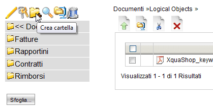
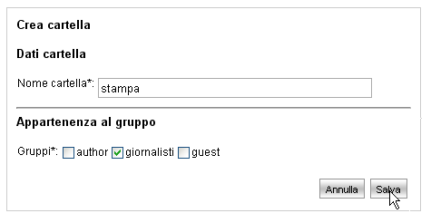

Aggiungere una Cartella |
LogicalDOC consente di organizzare i documenti in cartelle. L' idea di base è simile a ciò che viene fatto in un disco fisso locale.
Una cartella può contenere documenti e sotto-cartelle.
Nella visualizzazione cartella sono visualizzati tutti i documenti di una cartella.
Cliccando
sul nome di una sotto-cartella, questa di espande e nella parte destra ne vengono visualizzati i documenti contenuti.
Per aggiungere una nuova cartella occorre anzitutto accedere alla sezione Documenti, semplicemente utilizzando il menù principale.
Successivamente eseguire in sequenza le azioni indicate:
- Selezionare la cartella "padre" sfogliando le cartelle nella parte sinistra dello schermo.
Il percorso corrente ed il contenuto della cartella verrà mostrato nella parte destra dello schermo. In alternativa è possibile selezionare la cartella visualizzando l'albero gerarchico del sistema premendo il pulsante "Sfoglia".
Cliccare sulla icona "Crea cartella" posta sopra all'area di navigazione.

- Definire il nome della cartella ed i gruppi di appartenenza.
Occorre fare molta attenzione nell'assegnazione dei gruppi di appartenenza poiché solamente gli utenti che fanno parte di tali gruppi avranno visibilità della cartella; utenti di gruppi differenti non vedranno né potranno accedere a cartelle su cui non possiedono i permessi di lettura.
Ad esempio nella immagine successiva solamente gli utenti del gruppo "giornalisti" avranno visibilità e quindi conoscenza della nuova cartella e dei documenti in essa contenuti.
